Not a companion app and not a rewrite. The same slicing engine and the same interface as the desktop version, compiled natively for Android phones and tablets and adapted for touch.
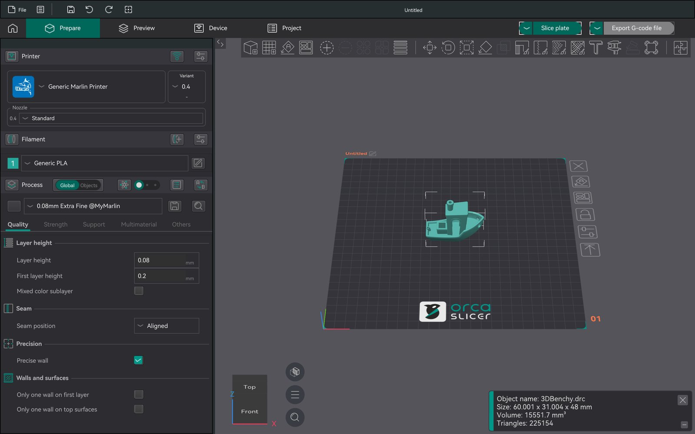
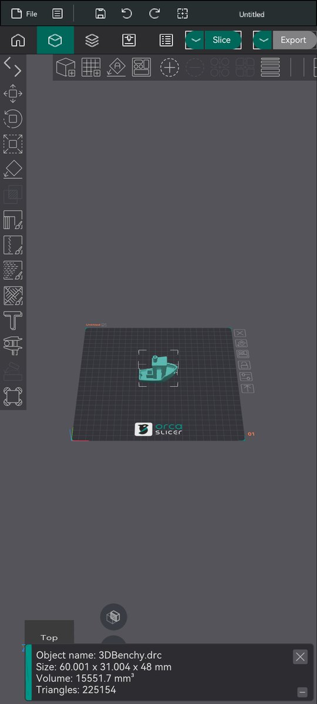
Real screen recordings on a tablet and on a phone, sped up 1.6×: add a model from the long-press menu, move, rotate and scale it with a finger, look through the settings, then slice.
This is Orca's own code, so the features are the same: the profiles, the gizmos, every setting and the calibration tools.
libslic3r is built from upstream without changes, with the same algorithms, the same printer profiles and the same G-code as the desktop version.
Orca's wxWidgets GUI runs on Android through wxWidgets' Qt backend: Prepare, Preview, gizmos, presets and the settings tabs.
Tap to select and drag to move. Long-press for context menus. Pinch to zoom, two fingers to pan, twist to rotate. Kinetic scrolling, and the back button closes dialogs.
Tablets get the full desktop layout. Phones get a compact one: settings full screen behind a "3D view" button, a vertical gizmo column, and compact bars.
Open STL and 3MF files from local storage, Google Drive or any document provider through Android's Storage Access Framework.
Compiled C++ for arm64 with OpenGL ES 3 rendering. Slicing uses every CPU core through TBB, like the desktop version.
Captured on Android emulators: a 2560×1600 tablet and a 1080×2400 phone. Orca follows the system's light or dark theme. Tap an image to enlarge it.
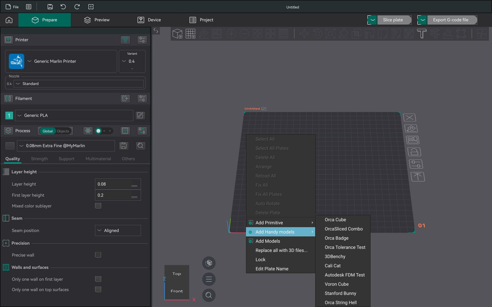
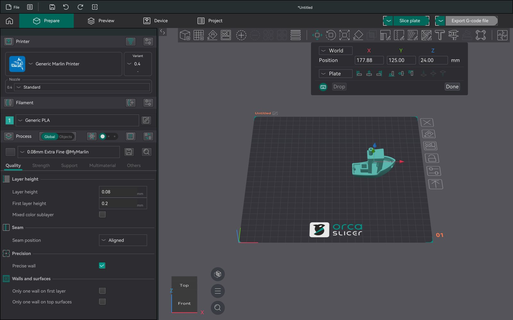
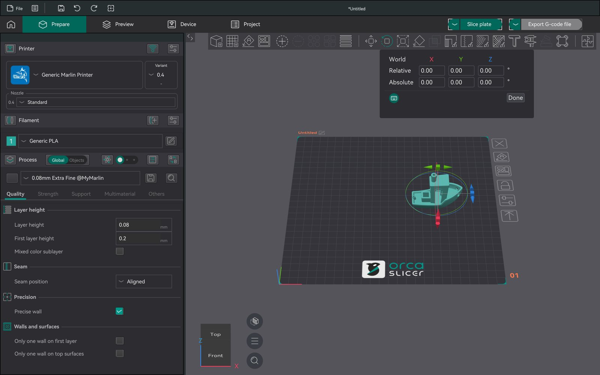
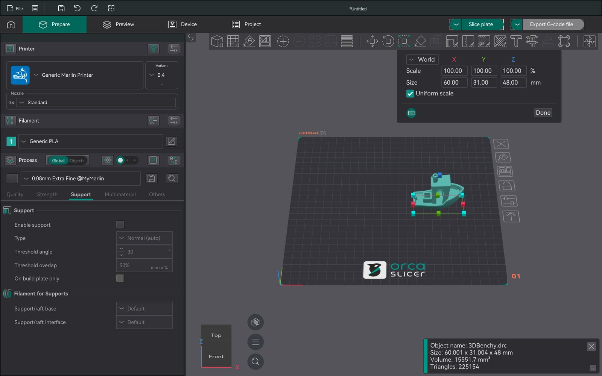
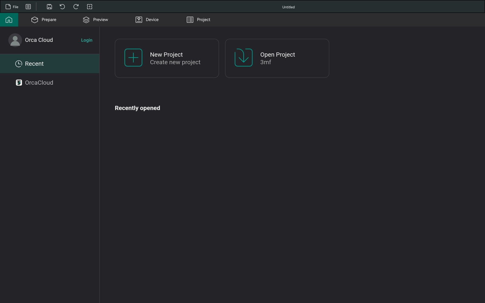
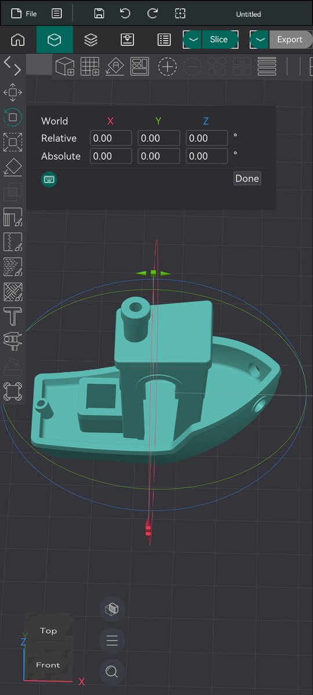
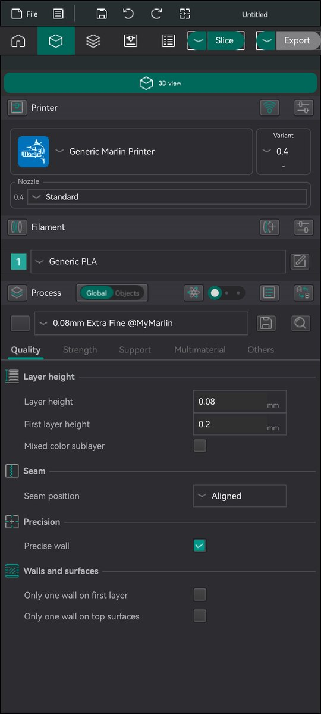
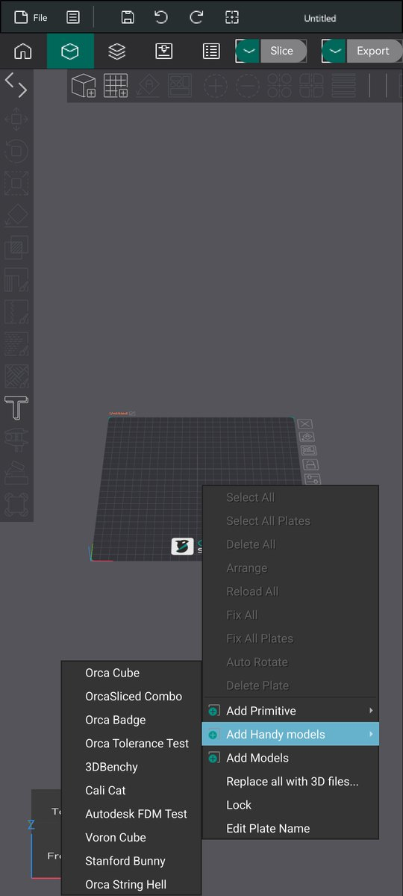
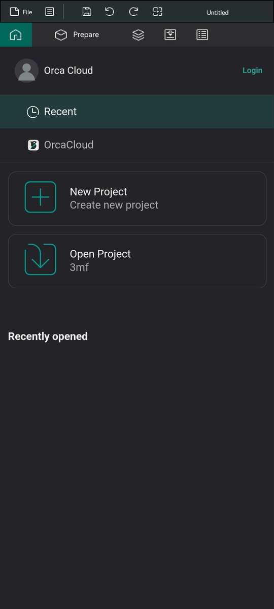
OrcaSlicer's interface is written against wxWidgets. wxWidgets has no Android backend, but it has a Qt one, and Qt runs on Android. The port makes that chain work on a touch screen.
content:// URIs, and saved files are copied back through the Storage Access Framework.__ANDROID__ layout tweaksPreview builds are published on GitHub Releases. The whole port is open source under the AGPL, the same licence as OrcaSlicer.
OrcaSlicer-android-arm64-preview.apk. It is the right file for almost every phone and tablet. Use x86_64 for emulators and Chromebooks.Requires Android 9 or newer and OpenGL ES 3.0. 6 GB of RAM or more is recommended for large models.
# Linux host · Android NDK 29 · Qt 6.8.3 for Android · JDK 17 git clone https://github.com/LucasCoraca/orcaslicer-android cd orcaslicer-android ./fetch-sources.sh # pinned upstream + patches ./configure-deps.sh arm64-v8a && ./run-deps.sh arm64 ./configure-wx.sh arm64-v8a ninja -C build/wx-arm64-v8a install ./configure-app.sh arm64-v8a ./build-all.sh arm64-v8a # → dist/*.apk
Prerequisites and environment variables are listed in the README.
Most of Orca already works. Here is what is known to be missing.
This is an independent, unofficial project. It is not affiliated with or endorsed by the OrcaSlicer team, Bambu Lab or SoftFever. OrcaSlicer is developed at github.com/OrcaSlicer/OrcaSlicer, and bugs in this port should be reported here, not upstream.